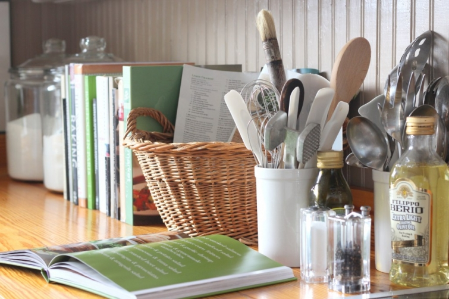
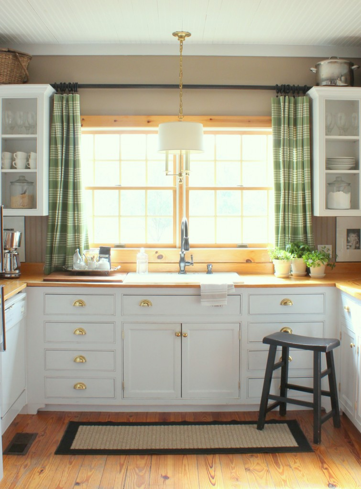
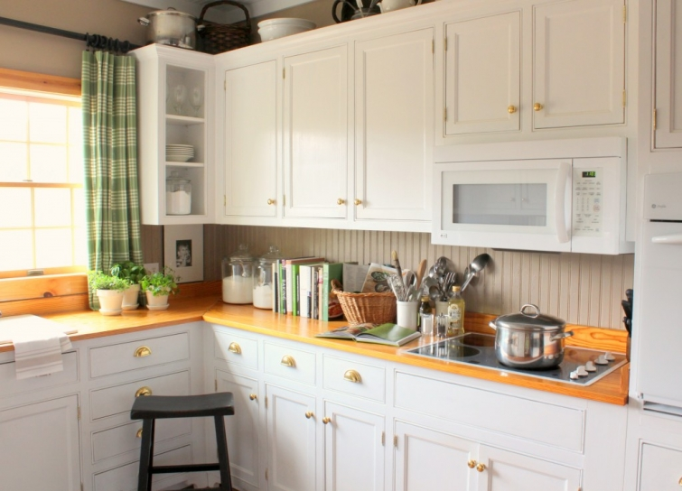

.png)
.PNG)
.PNG)
.PNG)
.PNG)
.PNG)
.JPG)
.JPG)
.PNG)
.PNG)



Happy St. Patrick’s Day!  I hope you have had your green on. 🙂  I thought this would be the perfect day to show you what has been done to the kitchen recently.  Years ago, when the house was being majorly redecorated, I bought some green plaid fabric.  I had originally planned to use it in my daughter’s room but decided on another color scheme for the space.  So the fabric sat unused until a couple of years ago. That’s when I decided to use it for drapes in the dining room and kitchen.  I made them, hung them, had them up for awhile, then traded them out for some other ones I had in storage, and put them in a closet.  The other day, I decided they would be a nice change for spring, so viola, here they are again.
Spring puts green in my brain, and like the domino effect that everything around here seems to have..I changed out all the red accessories in the kitchen and dining room for green.
The desk has gone green…

Here is a little better view of the chalkboard above the desk. Â (That dark area is soooo hard to photograph!)
I redid the trays around the coffee pots. Â The hot cocoa center is gone until next winter, and jars full of coffee take its place.
I used a little bit of green on the labels for the jars.
Here are the green drapes out in the dining room again. Â I bought and held up some blinds above them to see how they would look, but it all looked just too cluttered for my plain taste. Â So they are going back to the store.
Of course green has taken over the dining room table for St. Patrick’s Day.
For the holiday, my centerpiece is a soup tureen full of mint plants, a basket with green shamrock cookies, and a bowl full of “gold” …aka Rolo candies. Â Those little chocolates are awfully hard to resist! Â 
Here is another view of the table setting.
And naturally, green was added to the cupboard. Â I tried to think of some clever St. Patrick’s type of name for the snack mix that I put together with green M&M’s, Chex mix, and nuts, but my brain could not come up with anything. Any suggestions?
More shamrock cookies add a touch of green to the buffet top.

Who knows how long I will keep all the green in here? I do know it will work wonderfully with yellow for Easter. 🙂 Summer normally makes me want red and blue, but we will see… And speaking of Easter, don’t forget to leave a comment on this post or the last 2 to be entered in the drawing for the Easter basket giveaway.
See details here.
 The giveaway entries close tonight (March 17, 2013) at midnight.  I’ll be back with the name of the winner sometime this week.

Hoping to hear from you!


.PNG)
You have written many times about making drapes. I don’t really sew but think I can do straight lines! Is it that simple? Can you talk about how to make them, line them (you mention using Walmart plain white sheets) and hang them?
———————————————————————
Gosh, I thought I had written a post on making them when I made the ones in our sons’ bedroom. I remember taking photos of it as I went, but that was also when I was sick with bronchitis or something, so I must have not written one. BUT I will be making some drapes in a week or two, and I will try to get a post out on it and photograph the process then. It really is as simple as measuring your length, adding about 3 inches to have a hem and a half inch seam at the top, cutting it out, ironing the hem up, pinning and sewing it, then laying the sheet on top with the large band from the sheet about an inch up from the hem bottom, then sewing it all on 3 sides like a giant pillowcase. If this doesn’t make sense, I hope the post in a few weeks will.
Kelly
I just found this on Pinterest. I love the coffee bar and was wondering what type of jar/dish is holding the coffee scoops?
——————————————————————–
Thank you Althea. That jar is actually a candle holder that I believe I got at Michaels. Multi-use container, right? 🙂
Kelly
I am in love with all that green gorgeousness! I could look at it all day….sigh….
Your place is darling!
I love green and I love plaid, so I love this post and your kitchen. I enjoy putting things away and bringing them out a few years later for a “new” look.
Please tell me you weren’t as on-the-ball when your kids were little. You make such great changes, and I can barely get the laundry put away. As always, I love your table setting. So pretty!
I love the green in your kitchen and dining room Kelly. It’s amazing how changing a few accessories can change the look of a room. Your kitchen appears so much lighter and brighter now…of course a little spring outside the window helps too.
I always look forward to seeing what you are up to.
As always I just love your tablescape and wonderful little ways of blending your existing decor with the seasons. I loved your blue kitchen curtains but you’re right and those green ones are so fun for spring. It all looks so lovely Kelly!
Kelly, you like red in the fall and winter and green in the spring and summer. They’re both “Christmas colors”. Perhaps we should start a support group for those of us hung up on Christmas year round. Keep on blogging. It’s therapy for all of us.
your home is amazing, your talent is amazing….looks beautiful, fresh, comfy, springy, love how you can change a few items (even a few green M&M’s !! love), books, etc and change a whole room…..next time I am getting a neutral couch etc!!! I enjoy you blog!!
Love all the green in your home!!! Perfect for spring!!
Hi,
I love your home!! You are such an inspiration. I love the little things you do that add so much warmth and character to your home. You inspire me! The green looks so lovely!! I would love to win that beautiful Easter Basket..who wouldn’t, right?? Looking forward to what you will do for Easter. I’m sure it will be amazing!!
Kelly,
What pretty accents. They are subtle and fresh, perfect for Spring.
Karen
Happy St. Patty’s Kelly!
I love the new-ish green draperies. They are the perfect shade of green in my opinion. I do wish you’d share where you find all of your great fabrics at, my searches turn up nothing time and again. I spent the afternoon searching again today. I don’t have a cute little name for your chex mix as my brain is just blank too, however if it were at my house we would probably just have to call it ‘gone’! My family loves that stuff. 😉
———————————————————————–
Rose – Thank you! I bought all my plaids and checks from a fabric store that went out of business several years ago. The owner died and the store closed. Too sad. I don’t know the name of the company that had all the plaids, but I do know that the checks were made by Roth and Tompkins (https://www.roth-tompkins.com/catalog/search_results_cat.php?page=2&osCsid=0d71fa7786ed39f3d457243d00966ed1 ) My drapes in the greatroom are in a check called Lyme. I was in Lewis and Sheron fabrics and Forsyth Fabrics in Atlanta a couple of weeks ago, and they had some beautiful plaids. You can check online there and order their samples if you see something you like.
Hilarious that you would call the mix “gone”! It is addictive.
Kelly
Kelly, love the green in your kitchen and dining room . You are so smart to keep every thing neutral in your home then you can change things with the seasons for a fresh new look. I would love to live in your home. It is so warm and cozy. You are one talented lady. You inspire the rest of us to have a lovely home for our family to live in.
Have a great week. yarlette
Everything looks wonderful!! Spring always brings such hope!! I’d throw some Lucky Charms in the mix, maybe “Pot’o gold” or “End of the rainbow mix”
———————————————————————
Colleen – “End of the Rainbow Mix†is a good suggestion! I will keep that in mind for next year’s mix. Thanks for the idea!
Kelly
It’s funny how a few changes and a different accent colour can light ones mood…Love your kitchen and the drapes they are lovely cheers Frances
Well, I love the green curtains. I’m glad you put them to use again and extra glad you shared them with us!
I love the subtle touches of green you incorporated into your decor! Beautiful!
Love the green…as always, love the pics of your home. Thanks for sharing and the giveaway!
Green is my favorite color. Green, to me, represents all this is fresh and new. I love your kitchen accents. Beautiful, beuatiful, I love, love, love your table decor and new curtains. Did you have corned beef and cabbage for St. Patrick’s Day?
———————————————————————-
Pat – Finally catching up on emails/comments after a crazy week of paperwork. Thank you again for all your sweet compliments! We did not have traditional corned beef and cabbage for the day of green. Middle child was packing and moving to Virginia and daughter was trying to get back to college after her spring break, so our Sunday afternoon was kind of crazy. We had hot corned beef on rye sandwiches and homemade potato chips to go with them…oh and green mint chip ice cream for dessert. Kind of simple, but it worked for all the things going on here that day!
Kelly
Love the green…spring is in the air!!! So pretty!
Love the green drapes! The touches of green look so good with your black. I am so copying you as I have a lot of black and white too.
Love the green! I think you gave me an idea for my problem sliding door off the breakfast area. My wood blind strings broke and really hate to replace them. Thinking a really cute buffalo check on curtain rings will look great after seeing your curtains.
Oh and…lucky leprechaun munch?
———————————————————————–
Theresa – Glad I could give you an idea for your door! And Lucky Leprechaun munch is a great name for the mix!
Kelly
Kelly~ Love all the green!! The drapes are so pretty! And I was trying to read your recipe for Frozen Lemon Mousse on the chalkboard, but couldn’t quite see it all. Lol! Perhaps you’ll share it sometime? My St Patrick’s Day just got a lot happier, thanks to your post! ~Ann
—————————————————————————
Ann – Glad you loved all the green in the post! You are mighty perceptive to be noticing the recipe! I hope to share it in a post the week after Easter…it is very simple.
Kelly
Love the green touches! Can’t wait to see you easter decor. Yellow is becoming my new favorite color.
The idea to wrap the silverware with a ribbon is so pretty…I am definitely going to use that idea on Easter~
Dearest Kelly, You have brought hope for spring to come soon. Your green touches are so refreshing, please keep posting as I look so forward to your changes. You take such easy and simple things to make a house a home. Have a great week!
Hi Kelly, I love the green curtains, everything looks so fresh! Your blog is my FAVORITE! You are so talented, thanks for sharing your home, family and travels.
St. Patrick’s Day!!!, the parade in downtown Naples, FL was so awesome! As are your beautiful rooms!
I am with you Kelly…I like the windows just as they are!! And I love your Coffee Bar!! You do such cute lettering!!
Oh Kelly! I love it all! Green is fresh and friendly! I love the paper that is folded on the desk (?). It lloks like the paper you used to make the tags for the coffee jars. Was it scrapbooking paper? I really love the design and color of it! As far as extra green to go in the chex mix m-n-m mix I would suggest green jelly beans maybe?
————————————————————————-
Dawn – I LOVED that paper, too! It is scrapbook paper from good ol’ Hobby Lobby – called green ikat (original, huh?!) I covered the folder that has all of our take-out menus in it and used it on the coffee jar tags. I taped it up inside the cabinets in the kitchen that don’t have doors to see how it would look there, but it was just toooo much green next to the green plaid curtains. I think if I could find a yellow ikat like it, I would use it there. I then tried it inside the cabinet in the dining room. I think I might like it there. And it looked good inside the glass door cabinets in the kitchen. So the next time I am in Hobby Lobby, I am thinking of picking up a dozen or so sheets of it to try out there. Using that much pattern will be quite a brave thing to do with my very plain tastes!
Kelly
Oh I love the green…it’s my favorite and of course you’ve made your house look beautiful! Love the curtains…
I was trolling and found your update on green! I was wondering what you may have prepared for dinner on St. Pat’s Day? We had a one pot meal– corned beef brisket, carrots, new potatoes, and of course green cabbage with fresh buttered rye bread. For dessert there was lemon yellow loaf cake. Love your green curtains and the other touches of green here and there in your home! It feels as if you are easing into Spring and I am looking forward to seeing and reading about your Easter decorations and menu. Maybe share a recipe or two?:)
———————————————————————
Louvina – Our corned beef and rye was in the form of hot sandwiches, and our potatoes were homemade potato chips. Your meal sounds much better! I had to go the sandwich route since our middle child was leaving that afternoon to move to Virginia (to the town where Jan Karon lives!) and our daughter was trying to pack up after a week off for her spring break. Too crazy to do a big meal! We would have loved your lemon loaf cake, but we had mint chip ice cream instead. I hope to share a spring meal on the blog in the week or so with recipes. Hang on until then!
Kelly
Love the curtains! I am in the process of deciding what color curtains I want in my sunroom. I do like the green though!
I think you should call the mix “Leprechaun Loot” LOL!
Have a blessed week!
——————————————————————–
Sharon – Leprechaun Loot is my favorite of the suggested names! I couldn’t think of anything to go with Leprechaun. You did good!
Kelly
Hi Kelly, The green looks great and I understand completely the desire for green this time of year – I have it too. Thanks for sharing your lovely home with us!
The green touches give the light and fresh look of spring. Very nice. I really like the green drapes. Your table settings are always just right. Clean, crisp with simple touches. I love that look. So I asked my family about your snack name dilemma and we decided on “Clover Crunch”. Kinda lame. Ha!
———————————————————————-
Lori – Clover Crunch is not lame! I kind of like it…except with “clover†in the name, I would kind of expect to see some kind of greenery – like lettuce – in the mix! Ha ha. 🙂 thanks for the suggestion, though.
Kelly
how lucky you are that you can change out your drapes for seasons…i’ll have to tuck that idea back for future use. yesterday i was at my daughter’s house and noticed in a corner of her dining room a bag of green books i had picked up for her recently to use in her home…guess she didn’t have time to put them out, so i helped myself to them and brought them home with me! at least she’ll know where they are when she needs them!
happy st. paddy’s day!
—————————————————————————
Judy – That is too funny about helping yourself to the books! Such a thief you are! 🙂 Green books should go great with what you have done in your home.
Kelly
All your green touches look so fresh and Spring-y! I love that your home is neutral enough that you can change out colors like this. Inspired!!
You’re right – the green drapes DO make your house look more “springish”. The only thing I can come up with for your St. Patrick’s snack mix is Lucky Munch, but that sounds weird and doesn’t really make me want to try it. ha! Hopefully someone else will come up with something better.
I like all the green! We have not had real window treatments in our house yet – and it’s been 3 years. I have the money to do *something* but I don’t know yet what to do. Right now we’re just using mini-blinds.